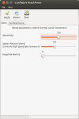
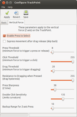

Trackpoint
Dieser Artikel wurde für die folgenden Ubuntu-Versionen getestet:
Ubuntu 16.04 Xenial Xerus
Ubuntu 14.04 Trusty Tahr
Zum Verständnis dieses Artikels sind folgende Seiten hilfreich:
Ein Trackpoint ist ein in die Tastatur integriertes Zeigegerät, das normalerweise aus drei (Maus-)Tasten und einem zwischen die Tasten B , G und H eingelassenen Knopf besteht (siehe Bild). Die Grundfunktionen eines Trackpoints (drei Tasten, Mauszeiger) werden unter Linux problemlos erkannt. Dieser Artikel beschreibt die Aktivierung der vertikalen und horizontalen Scrollfunktion für die mittlere Trackpoint-Taste und weitere Einstellungen wie z.B. die Empfindlichkeit.
Die folgende Tabelle listet der Übersichtlichkeit wegen nur diejenige Trackpoint-Hardware auf, für die bekannt ist dass sie eine besondere Konfiguration benötigt oder dass sie nicht alle in diesem Artikel beschriebenen Funktionen hat. Die restlichen Modelle werden "out of the box" vollständig unterstützt (Gerätebezeichnung ist "TPPS/2 IBM TrackPoint").
| Tabelle 1: Trackpoint-Hardware mit Besonderheiten | |||
| Fabrikat | Modell | Trackpoint-Funktion | Gerätebezeichnung |
| Notebooks | |||
| Dell | E6500 | siehe ALPS | "DualPoint Stick" |
| IBM/Lenovo ThinkPad | L430, L530 | 14.04: siehe Problembehebung, 16.04: ohne Einschränkung | "PS/2 Generic Mouse" |
| R61i | siehe ALPS | "DualPoint Stick" | |
| R500 | siehe ALPS | "DualPoint Stick" | |
| S1 Yoga | siehe ThinkPad *40 Modelle | "TPPS/2 IBM TrackPoint" | |
| T440, T440s, X240, *40 Modelle | siehe ThinkPad *40 Modelle | ||
| T450, T450s, X250, *50 Modelle | 14.04: siehe Problembehebung, 16.04: ohne Einschränkung | ||
| X300, X301 | siehe ALPS | "DualPoint Stick" | |
| L470, L570 | 17.10: siehe Problembehebung | "PS/2 Generic Mouse" | |
| Tastaturen | |||
| IBM/Lenovo | USB Keyboard mit Ultranav | nur Scrollfunktion | "Synaptics Inc. Composite TouchPad / TrackPoint" |
| Lenovo | ThinkPad USB Keyboard mit TrackPoint | nur Scrollfunktion | "Lite-On Technology Corp. ThinkPad USB Keyboard with TrackPoint" |
Für Notebooks anderer Hersteller wurde diese Anleitung bisher nicht getestet, ist jedoch prinzipiell einsetzbar.
Scrollfunktion¶
Seit Ubuntu 11.10 ist die Scrollfunktion schon in der Standardinstallation aktiv, es ist keine zusätzliche Konfiguration erforderlich. Eine Ausnahme hiervon bilden die Modelle ohne dedizierte Trackpoint-Tasten (siehe ThinkPad *40 Modelle).
Scrollfunktion anpassen¶
Möchte man die Ubuntu-Voreinstellungen für die Scrollfunktion verändern, legt man, falls noch nicht vorhanden, das Verzeichnis /etc/X11/xorg.conf.d an
sudo mkdir -p /etc/X11/xorg.conf.d
kopiert die Systemdatei /usr/share/X11/xorg.conf.d/11-evdev-trackpoint.conf hinein
sudo cp /usr/share/X11/xorg.conf.d/11-evdev-trackpoint.conf /etc/X11/xorg.conf.d/
und passt schließlich die Kopie mittels eines Editors[2] mit Root-Rechten an:
Section "InputClass"
Identifier "trackpoint catchall"
MatchIsPointer "true"
MatchProduct "TrackPoint|DualPoint Stick"
MatchDevicePath "/dev/input/event*"
Option "EmulateWheel" "true"
Option "EmulateWheelTimeout" "200"
Option "EmulateWheelButton" "2"
Option "XAxisMapping" "6 7"
Option "YAxisMapping" "4 5"
EndSection
Die Einstellungen beschreibt Tabelle 2:
| Tabelle 2: xorg.conf-Optionen | ||
| Option | Wert | Beschreibung |
| EmulateWheel | true | Scroll-Rad soll emuliert werden; zum Deaktivieren der Scrollfunktion trägt man "false" ein |
| EmulateWheelButton | 2 | Scroll-Funktion mit mittlerer Taste (1 = linke, 3 = rechte) |
| EmulateWheelTimeout | 200 | Damit die Scroll-Taste ihre ursprüngliche Funktion nicht verliert, gibt diese Option (in Millisekunden) an, wie lange die Taste gedrückt sein muss, damit dies nicht mehr als Klick, sondern als Scroll interpretiert wird |
| YAxisMapping | 4 5 | Aktiviert vertikales Scrollen |
| XAxisMapping | 6 7 | Aktiviert horizontales Scrollen (optional). Beim Einsatz von Opera diese Einstellung nicht verwenden, d.h. die Zeile weglassen, oder die Funktion zum Blättern im Browserverlauf mit der Maus abschalten. |
Nicht gewünschte Einstellungen können durch Auskommentieren mit einen "#" am Zeilenbeginn deaktiviert werden. Nach Ab- und Anmelden des Benutzers oder einem Neustart sind die Einstellungen aktiv.
Weitere Einstellungen¶
Neben der Scrollfunktion können Zeigerempfindlichkeit, -beschleunigung und weitere angepasst werden.
Hinweis:
Diese Einstellungen sind bei ALPS-Trackpoints nur dann möglich, wenn das Touchpad im BIOS deaktiviert ist.
Configure Trackpoint¶
Mit dem Programm Configure Trackpoint  können die Einstellungen komfortabel über eine grafische Oberfläche angepasst werden.
können die Einstellungen komfortabel über eine grafische Oberfläche angepasst werden.
Installation aus PPA¶
Hierzu ist das ThinkPad Extras PPA  freizuschalten.
freizuschalten.
Adresszeile zum Hinzufügen des PPAs:
ppa:linrunner/thinkpad-extras
Hinweis!
Zusätzliche Fremdquellen können das System gefährden.
Ein PPA unterstützt nicht zwangsläufig alle Ubuntu-Versionen. Weitere Informationen sind der  PPA-Beschreibung des Eigentümers/Teams linrunner zu entnehmen.
PPA-Beschreibung des Eigentümers/Teams linrunner zu entnehmen.
Damit Pakete aus dem PPA genutzt werden können, müssen die Paketquellen neu eingelesen werden.
Nach dem Aktualisieren der Paketquellen werden folgende Pakete installiert:
configure-trackpoint (ppa)
gksu (nur 16.04)
 mit apturl
mit apturl
Paketliste zum Kopieren:
sudo apt-get install configure-trackpoint gksu
sudo aptitude install configure-trackpoint gksu
Installation aus dem Quellcode¶
Zur Übersetzung des Programms aus den Quellen [6] werden die Pakete
build-essential
libgnomeui-dev
mit apturl
Paketliste zum Kopieren:
sudo apt-get install build-essential libgnomeui-dev
sudo aptitude install build-essential libgnomeui-dev
benötigt. Das Quell-Archiv configure-trackpoint-VERSION.tar.gz lädt man von der Sourceforge-Projektseite herunter und entpackt[5] es.
Nun wird mit
cd configure-trackpoint-VERSION ./configure make sudo make install
das Programm übersetzt und installiert.
Deinstallieren kann man es aus dem selben Verzeichnis heraus mit
sudo make uninstall
Benutzung¶
Um das Programm zu starten, wählt man im Schnellstart "Configure Trackpoint" oder im Terminal [1]
gksudo configure-trackpoint
|  |  |
Mit "Save" können die Einstellungen permanent gespeichert werden; sie werden in /etc/sysfs.conf abgelegt.
Hinweis:
Seit Ubuntu 9.10 funktioniert beim Systemstart das Laden der Einstellungen nicht zuverlässig, da die sysfsutils nicht an Upstart angepasst wurden. In diesem Fall empfiehlt sich die Verwendung der unter Einstellungen permanent machen beschriebenen Methode.
Einstellungen mit der Kommandozeile¶
Die bei laufendem System änderbaren Einstellungen sind als Dateien im Verzeichnis
/sys/devices/platform/i8042/serio1/serio2 – Modelle mit Touchpad
/sys/devices/platform/i8042/serio1 – Modelle ohne Touchpad bzw. Touchpad im BIOS deaktiviert
/sys/devices/platform/i8042/serio4/serio5 – ThinkPad X100e, X121e, L520, E145
abgebildet. Die wichtigsten Einstellungen sind in der folgenden Tabelle erklärt, für weitere Details sei auf thinkwiki.org verwiesen.
| Tabelle 3: Einstellungen | ||
| Datei | Default-Wert | Funktion |
| sensitivity | 128 | Empfindlichkeit, d.h. Verhältnis Zeiger- zu Trackpoint-Bewegung (gültige Werte: 1..254) |
| speed | 97 | Beschleunigung des Zeigers (gültige Werte: 1..254) |
| press_to_select | 0 | 1 aktiviert den linken Mausklick bei vertikalem Drücken des Trackpoints |
Die Einstellungen können im Terminal[1] verändert werden. Beispiele:
echo 200 | sudo tee /sys/devices/platform/i8042/serio1/serio2/sensitivity echo 150 | sudo tee /sys/devices/platform/i8042/serio1/serio2/speed echo 1 | sudo tee /sys/devices/platform/i8042/serio1/serio2/press_to_select
Das Verzeichnis ist dabei je nach Modell anzupassen.
Einstellungen permanent machen¶
Seit Ubuntu 9.10 bietet weder die Aufnahme der im vorigen Abschnitt gezeigten Befehle in rc.local, noch die von configure-trackpoint verwendete /etc/sysfs.conf, einen zuverlässigen Weg, beim Systemstart die gewünschten Einstellungen zu setzen. Der folgende Abschnitt beschreibt den Lösungsweg:
udev-Regel (alle Ubuntu-Versionen)¶
Hierzu erstellt man von Hand mit einem Editor mit Root-Rechten[2] die Datei /etc/udev/rules.d/71-trackpoint.rules mit folgendem Inhalt:
ACTION=="add", SUBSYSTEM=="input", ATTR{name}=="*TrackPoint*", ATTR{device/sensitivity}="200", ATTR{device/speed}="150", ATTR{device/press_to_select}="0"
Die Werte für die Attribute sensitivity, speed und press_to_select passt man nach Wunsch an. Eine modellspezifische Anpassung von Pfaden ist nicht erforderlich!
Problembehebung¶
Trackpoint bzw. Trackpoint-Tasten werden nicht erkannt¶
| Tabelle 4: Betroffene Laptops und Lösungen | |||
| Fabrikat | Modell | Symptom | Lösung |
| Lenovo ThinkPad | L430, L530 | Trackpoint und Trackpoint-Tasten ohne Funktion | Kernel-Upgrade per HWE-Stack oder 16.04 |
| T440s, S1 Yoga, *40 Modelle | Trackpoint-Tasten integriert ins Clickpad ohne Funktion | siehe ThinkPad *40 Modelle | |
| T450, T450s, X250, *50 Modelle | Trackpoint-Tasten ohne Funktion | Kernel-Upgrade per HWE-Stack oder 16.04 | |
| L470, L570 | Trackpoint und -Tasten ohne Funktion in Ubuntu 17.10 | Kernel-Boot-Parameter psmouse.proto=imps ergänzen | |
Das Touchpad und dessen Maustasten bzw. das Clickpad funktionieren hingegen problemlos.
Clickpad der ThinkPad *40 Modelle¶
ThinkPad *40 Modelle haben in den oberen Rand des Clickpads integrierte Trackpoint-Tasten.
Ubuntu 14.04¶
Um die mittlere und die rechte Trackpoint-Taste nutzbar zu machen, benötigt man neben dem Kernel-Upgrade per HWE-Stack eine zusätzliche Konfiguration.
Mit einem Editor[2] mit Root-Rechten erstellt man die Datei /etc/X11/xorg.conf.d/90-synaptics-tp40.conf mit folgendem Inhalt:
Section "InputClass"
Identifier "ThinkPad *40 clickpad buttons"
MatchDriver "synaptics"
# Tasten definieren
Option "SoftButtonAreas" "60% 0 0 2400 40% 60% 0 2400"
Option "AreaTopEdge" "2400"
Option "TapButton1" "1"
Option "TapButton3" "2"
Option "TapButton2" "3"
# Verrutschen beim Klicken vermeiden
Option "VertHysteresis" "50"
Option "HorizHysteresis" "50"
# Ziehfunktion
Option "LockedDrags" "1"
# Antippen zum Klicken
Option "FingerLow" "50"
Option "FingerHigh" "55"
# Unbeabsichtigte Klicks durch den Handballen vermeiden
Option "PalmDetect" "1"
Option "PalmMinWidth" "5"
Option "PalmMinZ" "40"
# Natural scrolling
Option "VertTwoFingerScroll" "1"
Option "VertScrollDelta" "-90"
Option "HorizTwoFingerScroll" "1"
Option "HorizScrollDelta" "-90"
Option "MinSpeed" "1"
Option "MaxSpeed" "1"
Option "AccelerationProfile" "2"
Option "ConstantDeceleration" "4"
EndSectionEine Konfiguration für Linkshänder findet sich bei thinkwiki.org .
Durch Ab- und Anmelden des Benutzers oder einen Neustart wird die Konfiguration aktiv.
Ubuntu 16.04 und höher¶
Es ist keine Konfiguration nötig.
Alternativlösung für Ubuntu 12.04 (nicht ThinkPad *40 Modelle)¶
Hinweis:
Nebenwirkungen der hier beschriebenen Umgehungslösung:
Es ist keine Zwei-Finger-Scrollfunktion des Touchpads mehr möglich
Trackpoint und Touchpad werden softwareseitig zu einem Gerät, sodass sich das Touchpad nicht einzeln abschalten lässt
Es ist das Kernelmodul psmouse mit der Option proto=bare zu laden. Dies kann man mit dem Kommando
echo "options psmouse proto=bare" | sudo tee /etc/modprobe.d/trackpoint-elantech.conf
permanent einstellen.
Um die Scrollfunktion zu aktivieren, erstellt man die Datei /usr/share/X11/xorg.conf.d/11-trackpoint-elantech.conf:
Section "InputClass"
Identifier "Elantech Trackpoint"
MatchProduct "PS/2 Generic Mouse"
MatchDevicePath "/dev/input/event*"
Option "EmulateWheel" "true"
Option "EmulateWheelButton" "2"
Option "EmulateWheelTimeout" "200"
Option "YAxisMapping" "4 5" # vertikales Scrollen
Option "XAxisMapping" "6 7" # horizontales Scrollen
EndSectionNun wird das Kernelmodul neu geladen mit
sudo modprobe -rv psmouse && sudo modprobe -v psmouse
Hat man alles richtig gemacht, wird der Trackpoint sofort erkannt und kann benutzt werden.
Links¶
thinkwiki.org
– Trackpoint-KonfigurationButtonless Touchpad
– Konfiguration des Clickpads der ThinkPad *40 ReiheConfigure Trackpoint
– Projektseite der Configure Trackpoint GUIPointing Stick – Wikipedia
Appropriate Term
– alternative Benennungsmöglichkeiten967399
– Fehlerbericht zum nicht erkannten Trackpoint beim L430/530systemd v222
– Referenz für die Entfernung des Attributs WAIT_FORTouchpad – Grundlagenartikel zu Touchpads
- Erstellt mit Inyoka
-
 2004 – 2017 ubuntuusers.de • Einige Rechte vorbehalten
2004 – 2017 ubuntuusers.de • Einige Rechte vorbehalten
Lizenz • Kontakt • Datenschutz • Impressum • Serverstatus -
Serverhousing gespendet von